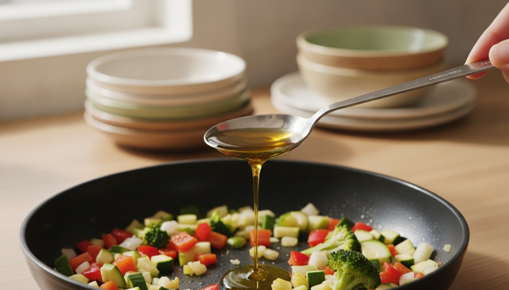

Könnyű Konyha
Könnyű Konyha
Napi 4–5 kisebb étkezés, és ne maradj ki egyet se.
A nagy adag sokaknál kellemetlen, a kisebb adag gyakrabban jobban megy. Az étkezés kihagyása viszont nem megoldás: a rendszeresség fontosabb, mint hogy mindenből keveset ettél.[2]
Egyszerre kevés zsír.
A zsír indítja be az emésztéshez szükséges munkát; ha egyszerre sok jön, az néhány embernél panaszt okoz. Ezért nem a napi összeg a lényeg, hanem hogy egyetlen étkezés se legyen nehéz. Gyakorlati irány: étkezésenként kb. 5–15 g zsír, és nem három nehéz étkezés egy nap.[2]
A zsír nem ellenség.
A nullára vitt zsír hiba. A zsír a kiegyensúlyozott étrend része, a bevitt energia nagyjából 30–35%-át adja. A cél az elosztás és a minőség, nem a kiiktatás.[2]

Mérd az olajat, ne öntsd.
Ez az egyetlen szokás, amitől a többi szám értelmes lesz. Egy teáskanál olaj (5 ml) kb. 4,6 g, egy evőkanál (15 ml) kb. 13,7 g zsír. Egy „kis” löttyintés a serpenyőbe könnyen három evőkanál. Mérőkanál vagy olajspray, és ennyi.[4]
Napi 500 g zöldség és gyümölcs.
A magyar ajánlás 2023-ban ide emelte a napi mennyiséget. Ha minden étkezésbe kerül zöldség vagy gyümölcs, ez magától összeáll. Emellett: a vörös és a feldolgozott hús mennyisége legyen korlátozott, és legyen hetente egy húsmentes nap.[3]
Hal hetente kétszer, ebből egyszer olajos hal.
A lazac, a makréla zsírosabb, mint a tőkehal, és pont ezért van rá szükség. Egy ilyen fogás mellé aznap könnyebb a többi étkezés.[2]
Egyéni tűrés: a te listád nem a szomszéd listája.
A puffasztó zöldség, a csípős, a kávé, az alkohol embere válogatja. A módszer: ételnapló, egy hét próba elhagyás, aztán visszavezetés. Így derül ki, mi számít és mi csak gyanú volt.[2]
Tej nélkül: dúsított alternatívát válassz, és olvass címkét.
A növényi italok és joghurtok közül a natúr, cukrozatlan, kalciummal dúsított változat a jó választás. Két dolgot viszont érdemes tudni. Az egyik: a dietetikusi ajánlás szerint a növényi italokra folyadék-alternatívaként kell gondolni, tápanyagtartalomban jelentősen eltérnek a tejtől, ezért a tej helyettesítésére nem alkalmasak. A másik: hogy emiatt nálad kell-e bármit pótolni (kalcium, B12, D-vitamin, fehérje), az nem egy weboldalon dől el. A kérdéssor lent, a kérdések dobozában van.[2][3]

Fele zöldség, negyede gabona, negyede fehérje
A konyhatechnika legalább annyit számít, mint a hozzávaló: ugyanabból a csirkemellből lesz könnyű vacsora és nehéz vacsora, attól függően, mibe teszed.
Hol bújik meg a tejfehérje
Amit keresni kell az összetevők között
tej, tejpor, tejsavó, savópor, savófehérje, kazein, kazeinát, laktóz, vaj, sajt, tejszín, joghurt, tejcsokoládé, tejfehérje, „whey”, „milk”.
Hol szokott bújni
Kenyér és pékáru (tejpor, savópor), felvágott, virsli, pástétom (tejfehérje, kazeinát), kész szószok és salátaöntetek, instant levesek és krémleves-alapok, chips és sós nassok (sajtaroma), müzliszelet, csokoládé és édesség, panírozott és előkészített félkész termékek, margarin, és néhány „növényi” desszert, amiben mégis savó van. A legtöbb hiba nem a tejespolcon történik, hanem a kenyérnél és a felvágottnál.
Egy gyors ellenőrzés, ami szinte mindig működik
Az EU-ban a tejet mint allergént az összetevők felsorolásában kiemelve kell szedni. A rendelet szerint az allergén nevét olyan szedéssel, például betűtípussal, stílussal vagy háttérszínnel kell kiemelni, amely egyértelműen elkülöníti a többi összetevőtől; a tej a lista 7. pontja: „Tej és az abból készült termékek (beleértve a laktózt)”. Vagyis: ha a tej benne van, tipográfiailag kiugrik az összetevők közül.[5]
A két leggyakoribb félreértés
- A „laktózmentes” nem tejfehérje-mentes. A laktóz cukor, a kazein és a savófehérje pedig fehérje: a laktózmentes tejben, túróban, sajtban a tejfehérje ugyanúgy benne van.
- A „növényi alapú” felirat sem garancia. Előfordul, hogy a termék növényi alapú, de savót vagy kazeinátot is tartalmaz. Az összetevők listája dönt, nem az előlap.
„Nyomokban tejet tartalmazhat”: ez gyártási kereszt-szennyezésre utal, nem összetevőre. Hogy ez nálad számít-e, az szakemberrel eldöntendő kérdés: a kérdéssorban ott van.
Folyadék
Napi 6–8 pohár alkoholmentes folyadék. Víz, ásványvíz, gyógytea, híg gyümölcstea.[2]
Kérdések, amiket érdemes feltenni a szakembernek
Ez a lista nem diagnózis és nem terápia, hanem kérdéssor, amivel érdemes bemenni.
- Nálam mi az a napi zsírmennyiség, amivel érdemes dolgozni, és étkezésenként mennyi legyen?
- A jelenlegi testsúlyomnál cél-e a fogyás, és ha igen, milyen tempóban?
- Van olyan vizsgálati érték, amit emiatt érdemes rendszeresen követni, és milyen gyakran?
- Kell-e dietetikusi konzultáció, és kérhető-e rá beutaló?
- A tejtermékek teljes elhagyása mellett kell-e pótolni kalciumot, B12-t vagy D-vitamint, és miből?
- A növényi alternatívák közül nálam melyik a megfelelő, és mennyi fehérjére van szükségem naponta?
- A „nyomokban tejet tartalmazhat” jelölésű termékek nálam beleférnek-e?
- Az általam szedett készítmények közül bármelyik érintett-e az étrendi változástól?
Ételnapló-sablon
Ennyi elég ahhoz, hogy legyen miről beszélni a következő orvosi vizsgálaton. A panasz 0 (semmi) és 3 (erős) között.
| Dátum, idő | Mit ettem (kb. mennyit) | Panasz 0–3 | Megjegyzés |
|---|---|---|---|
| 10-24, 7:30 | zabkása 40 g pehely + 2 dl szójaital + alma | 0 | |
| 10-24, 12:30 | csirkeragu rizzsel, 1 tk olaj | 1 | nagyobb adag volt |